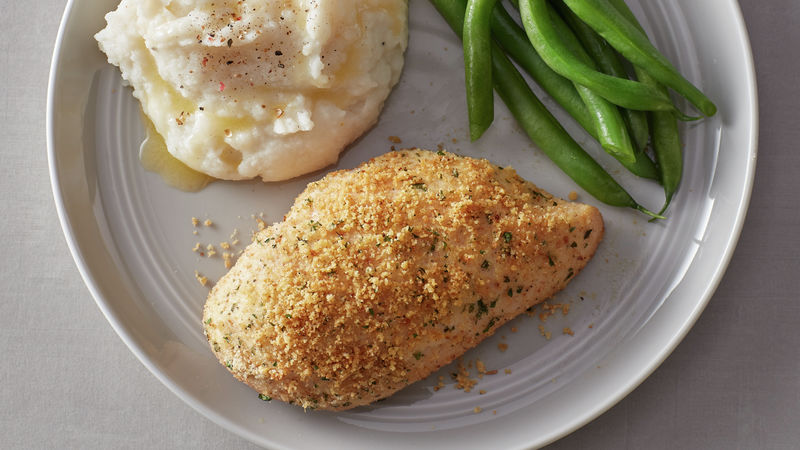
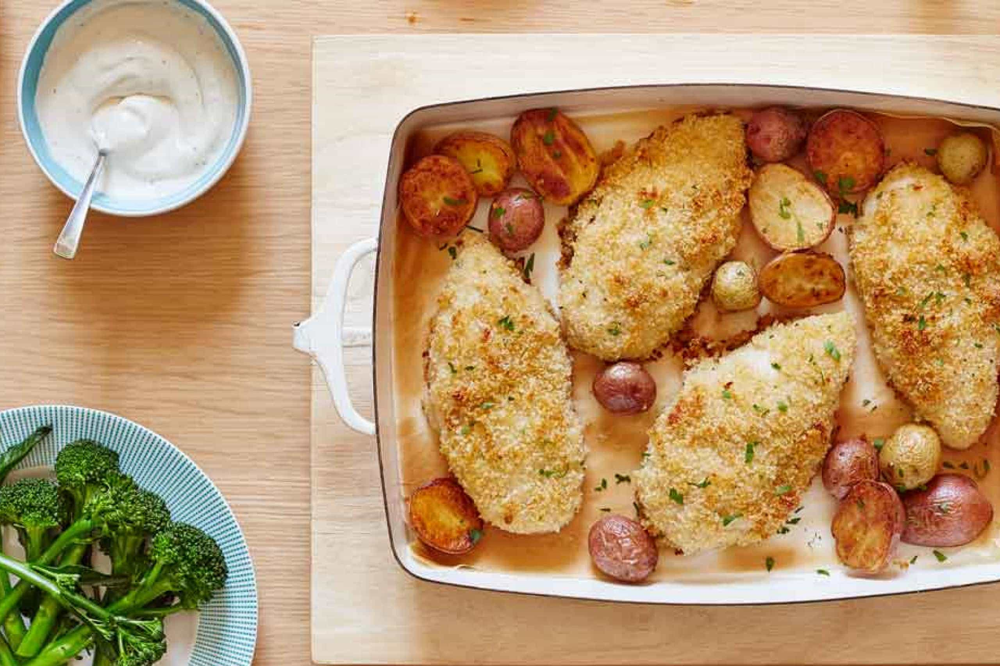

Ranch chicken

This Ranch Chicken recipe is an easy skillet meal with creamy sauce and zesty Ranch seasoning. Serve with a side of vegetables and spoon that delicious sauce over some warm baked potatoes!
This meal is definitely one of my favorite easy meals. It actually came about because I was trying to put a different spin on my super popular creamy chicken stew recipe. And this skillet meal is the perfect way to do just that.
The chicken is perfectly seasoned and so flavorful, (with a little brush of melted butter for an extra crispy golden sear, I might add). And the sauce takes just minutes to make from there.
ingredients
- cooking spray
- 2 tablespoons olive oil
- ¼ cup chopped yellow onion
- ½ leftover rotisserie chicken, chopped
- 2 tablespoons roasted garlic
- ½ teaspoon salt
- ½ teaspoon ground black pepper
- ½ teaspoon garlic powder
- 1 bunch green onions, chopped
- 2 tablespoons ranch dressing
- 2 tablespoons sour cream
- 15 (6 inch) corn tortillas, or more to taste
- 2 cups shredded Cheddar-Monterey Jack cheese blend
- 1 cup mild enchilada sauce
how to make it
- Slice each chicken breast into 2-3 thinner slices, about 1/2 inch thick. Season with Italian seasoning, salt, and pepper. Brush 1 side of each piece with melted butter and sear in olive oil for 4-5 minutes per side, until golden brown. Set aside.
- Combine sauce ingredients over medium heat. Let it bubble gently for 5 minutes.
- Add chicken back to the skillet and spoon sauce on top. Cover partially and simmer for 10 minutes. Serve with mashed or baked potatoes and vegetables.
